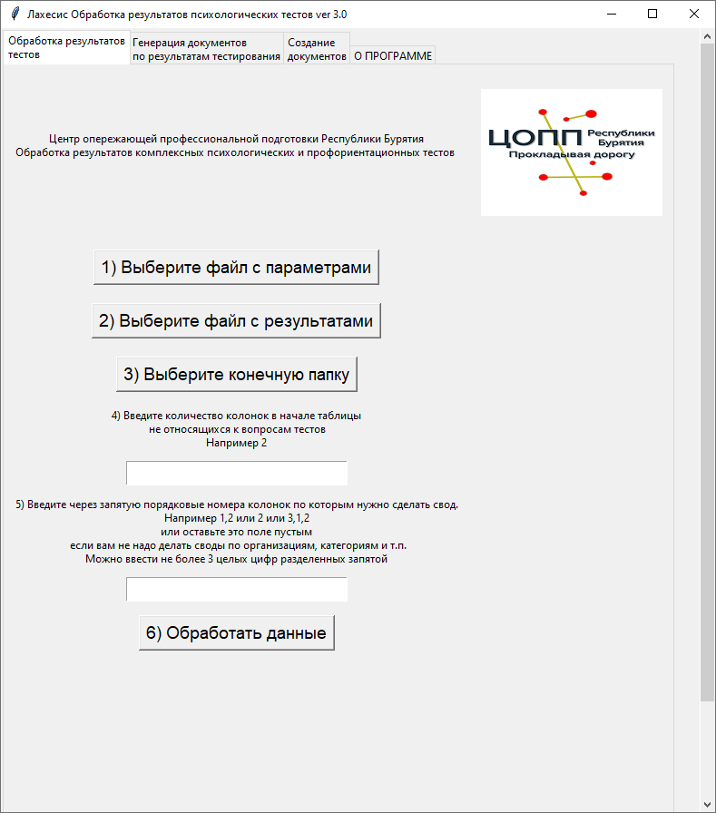

Назначение программы
Программа предназначена для автоматической обработки результатов психологических и профориентационных тестов, полученных с помощью Яндекс-форм (можно использовать и другие сервисы опросов) в формате Excel (xlsx).
Программа зарегистрирована в Роспатенте
Ссылка на свидетельство РоспатентаДля кого эта программа?
Эта программа может использоваться педагогами-психологами школ и СПО, специалистами по профориентационной работе.
Что может программа
Обрабатывать следующие психологические и профориентационные тесты:
Тесты на тревожность и депрессию для старшеклассников и студентов СПО:
- Индекс общего самочувствия ВОЗ 1999
- Шкала тревожности Кондаша
- Шкала депрессии Бека
- Шкала безнадежности Бека
- Шкала депрессии Цунга
Тесты на лидерство и эмоциональный интеллект для старшеклассников и студентов СПО:
- Эмоциональный интеллект Люсин
- Уровень самооценки Ковалев
- Коммуникативные и организаторские склонности» В.В. Синявский, В.А. Федорошин КОС-1
Профориентационные тесты для старшеклассников:
-
Якоря карьеры, методика диагностики ценностных ориентаций в карьере (Э.Шейн, перевод и адаптация В.А.Чикер, В.Э.Винокурова).
- Тест Дж.Голланда (Дж.Холланда) на определение профессионального типа личности (модификация Г.В.Резапкиной).
- Сфера профессиональных предпочтений учащихся (модификация Г. В. Резапкиной).
- Дифференциально-диагностический опросник.
Автоматически создавать документы с результатами тестирования по количеству прошедших тестирование.
Преимущества
- Бесплатно. Все что вам нужно это аккаунт на Яндекс почте.
- Простота. Самое трудоемкое это сделать Яндекс Форму, после чего вам останется скачать результаты в виде таблицы Excel(xlsx) и обработать результаты одной кнопкой.
- Стабильность. Яндекс Формы работают на серверах Яндекса, а это значит, что они будут работать практически всегда.
- Нет трат на техническое сопровождение т.е. трат на хостинги, доменные имена, разработку и обработку тестов. Все что нужно это доступ в интернет у тестируемых.
- Без проблем работает на мобильных телефонах. Не нужно думать, где взять компьютеры для тестирования.
- Массовость. Можно проводить одновременные тестирования для большого количества человек.
- Организовать, провести и обработать результаты теста может один человек. При этом от него не будет требоваться каких-то специальных знаний.
- Не нужно заниматься предварительной регистрацией. Чтобы пройти тест не нужно нигде регистрироваться. Пользователь получил ссылку на тест, прошел тест на этом его взаимодействие с Яндекс Формами заканчивается.
- Простота организации тестирования. Вы можете сделать 10 копий созданного теста и разослать 10 ссылок на эти тесты для разных школ, техникумов после чего получить 10 таблиц с результатами для каждой школы, техникума. Не нужно будет объяснять каждому тестируемому куда заходить и что выбирать, нужно будет просто нажать на ссылку и пройти тест.
- Можно организовать тестирование без передачи персональных данных.
- Автоматическое создание на бланках вашей организации документов с результатами тестирования.
- Ранжирование результатов, тестируемых по степени выраженности склонностей, состояний.
- Групповая статистика в разрезе курсов, групп, номеров классов, классов, полов.
Возможности
- Генерация файла содержащего результаты тестируемых по всем использованным тестам с указанием требующих особого внимания и находящихся в зоне риска
- Генерация файлов с подробными результатами каждого теста
- Генерация
- Поиск ошибок в персональных данных школьников
- Поиск различий между двумя таблицами с одинаковой структурой
- Создание однотипных документов docx (Word и его аналоги) справки, договора, личные дела.
Входные данные
Программа использует в своей работе файлы формата xlsx (Excel или его аналоги) в которых содержатся ответы тестируемых и файлы формата docx (Word и его аналоги) используемые в качестве шаблонов для создания справок, сертификатов и т.п.
Программа не использует в своей работе какие-либо базы данных
Выходные данные
В папке которую выбирает пользователь создаются файлы формата xlsx и docx
Алгоритм организации и проведения тестирования с помощью Лахесис
1) Педагог-психолог создает опросную форму комбинируя в нужном ему порядке и количестве тесты из списка имеющихся (можно использовать любые сервисы, которые позволяют получать результаты опроса в формате xlsx).
2) Педагог-психолог проводит рассылку ссылок, QR-кодов на созданные формы посредством сайта организации, мессенджеров и т.п.
3) После окончания тестирования педагог-психолог скачивает результаты в виде таблицы Excel(xlsx) и с помощью Лахесис получает обработанные результаты тестирования.
4) При необходимости регулярного тестирования производится копирование формы (при этом новая форма создается без старых ответов) и шаги 2,3 повторяются.
Опросная форма должна соответствовать нескольким правилам.
Правило 1.
При тестировании студентов СПО в начале формы обязательно должны быть колонки с названиями: Курс,Группа,Пол.
При тестировании школьников старших классов в начале формы обязательно должны быть колонки с названиями: Номер класса, Буква класса, Пол.
Правило 2.
Вы можете проводить тестирование как с вводом ФИО тестируемого, так и анонимное тестирование.
Для анонимного тестирования вы можете не использовать идентифицирующий вопрос или использовать вопрос с типом Целое Число (для исключения возможности ввода нецензурного текста) чтобы тестируемый мог впоследствии найти свой результат.
Правило 3.
Вопросы относящиеся к одному тесту должны идти подряд.
Количество, текст вопросов и ответов должно совпадать с эталоном (указанным в папке Материалы для внедрения) т.е. в тесте Шкала безнадежности Бека должно быть обязательно 20 вопросов и т.д.
Интерфейс пользователя
При работе с программой используется графический интерфейс
Совместимость
Операционная система: Windows 7, Windows 8 / 8.1, Windows 10 и выше, Linux (Импортозамещенные ОС: Red OS, Alt Linux, Astra Linux)
Безопасность
Программа работает локально, не использует локальную сеть или сеть Интернет.
Исходные файлы xlsx и docx пользователя не изменяются программой.
Удобство использования
В интерфейсе программы используются вкладки, на каждой из вкладок находится все что нужно для работы конкретной функции программы.
В программе не используются меню различной степени вложенности, все шаги которые нужно выполнить пользователю пронумерованы по порядку.
Интерфейс ориентирован на пользователей с невысоким уровнем компьютерной грамотности.
Поддержка
Предложения, замечания по работе программы отправлять на почту itdarhan@yandex.ru
Скачать
Чтобы начать работу, скачайте инструкцию
Скачать инструкцию по установке и началу работыВ руководстве пользователя вы найдете подробное пошаговое руководство по работе с каждой из функций программы.
Скачать руководство пользователяСкачайте и распакуйте архив с материалами для внедрения. Персональные данные используемые в примерах, являются искусственно сгенерированными.
Скачать материалы для внедренияОбучающие видео по работе с программой.
Обучающие видеоВыберите нужную версию Лахесис для скачивания.
Скачать версию Лахесис для Windows x64Скачать версию Лахесис для Windows x32
Скачать версию Лахесис для Linux x64